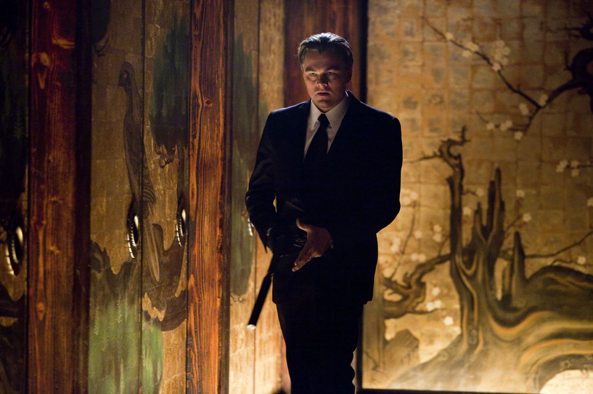

Sinopsis
Un ladrón experto en robar secretos del subconsciente durante los sueños recibe un último encargo: implantar una idea en la mente de un objetivo. Cuanto más se adentra en los sueños, más difícil resulta distinguir la realidad.
Ficha destacada
Christopher Nolan convierte el subconsciente en un escenario de acción, culpa y arquitectura imposible. Una película perfecta para abrir conversación sobre sueños, montaje y percepción.

Un ladrón experto en robar secretos del subconsciente durante los sueños recibe un último encargo: implantar una idea en la mente de un objetivo. Cuanto más se adentra en los sueños, más difícil resulta distinguir la realidad.
4 premios Oscar, 3 premios BAFTA y 6 Critics Choice Awards.
Nolan trabajó la idea durante años antes del rodaje. La película se filmó en varios países y combina efectos prácticos con una puesta en escena de gran precisión.